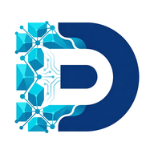

Dedikar IASistemas inteligentes para empresas crescerem com eficiência
Checklist · Governança de IA
5 perguntas antes da IA falar com o seu cliente.
Se a IA já responde cliente, mexe em planilha ou manda proposta na sua empresa, ela precisa de dono, regras e aprovação. Responda as 5 perguntas abaixo com o seu time. Leva 20 minutos e evita o erro que ninguém sabe de quem é.
01
Quem é o dono da IA na empresa?
Uma pessoa com nome, que responde pelo que a IA faz e pode vetar um uso. Sem dono, cada um usa do seu jeito.
Responsável
02
Que dados a IA pode ler, e quais nunca?
Pode: catálogo, tabela de preços pública, perguntas frequentes. Nunca: dados bancários, CPF de cliente, contratos, salários.
Pode / nunca
03
O que ela faz sozinha e o que precisa de aprovação?
Sozinha: responder dúvida comum, agendar, mandar segunda via. Com aprovação: desconto, prazo prometido, cancelamento, reembolso.
Precisa de aprovação
04
Quem aprova o que sai para o cliente?
Nome de quem aprova e em quanto tempo responde. Proposta, preço e contrato nunca saem sem um humano olhar.
Aprovador / prazo
05
Onde fica o registro do que a IA fez, e quem revisa?
Um lugar só (CRM, planilha ou o próprio sistema) e 15 minutos por semana para revisar erros e ajustar as regras.
Onde / quem / quando
Por que isso importa: numa pesquisa com 2.100 executivos (SmarterX, divulgada pela Forbes Brasil em 02/11/2026), só 13% das empresas tinham a base para usar IA com segurança, e 32% não tinham nenhuma regra nem responsável.